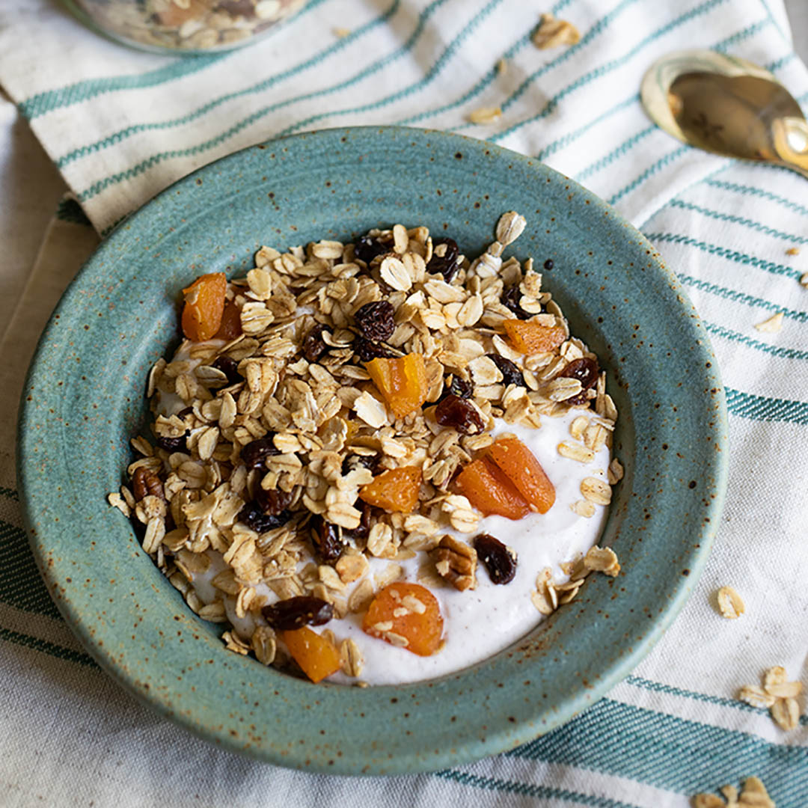

Muesli Recipe

Description
Muesli is a mix of oats, dried fruit, seeds, and nuts. It is an equally filling, healthy, and
delicious breakfast!
This cereal tastes great with milk, yogurt, and even water.
Ingredients
- 4 cups rolled oats
- 1 cup wheat bran
- 1 cup rasins
- 1/2 cup chopped walnuts
- 1/4 cup sunflower seeds
Steps
- In a large bowl combine oats, wheat bran, dried fruit, nuts, and seeds.
- Mix well.
- Store muesli in an airtight container.
- When ready to consume, pour enough yogurt to fully cover the cereal.
- Stir well, and let the mixture sit for 10 minutes until oats get soft.
- Enjoy!